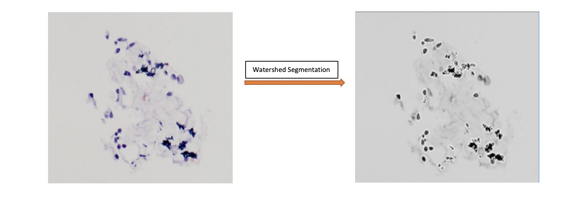
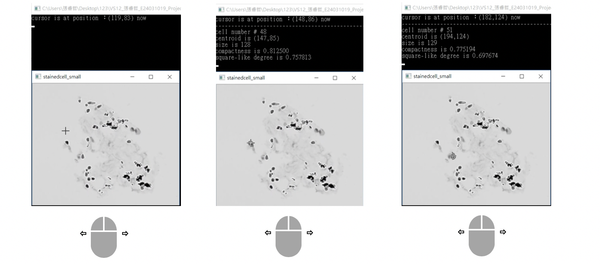
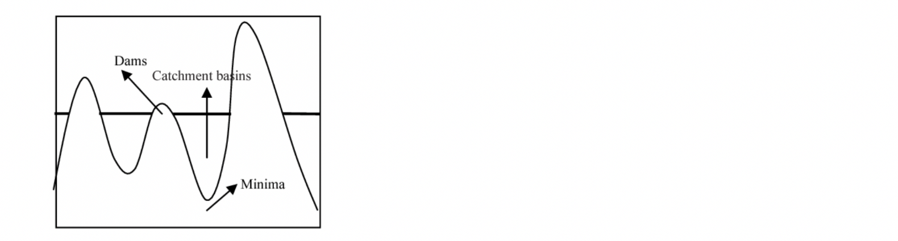

A GUI for Medical Workers to Process Biopsy Image
DOWNLOAD PDFThis work was my final project in the image processing course. We aimed to develop a simple GUI for people to deal with large or complex biopsy image. Our main algorithm is Watershed Segmentation programmed in C/C++ and OpenCV on the Microsoft Visual Studio. We hope this work can practically help the medial workers in the hospital, so we designed many efficient functions for them to save the time.

The above picture shows the original input image and the output image after processing respectively. We can see that we effectively distinguish every cell from the biopsy image. Why is this GUI important? Because the medical workers need to record the information of every cell manually, which consume much time and energy for one person. Therefore, the user interface helps them to efficaciously tackle with such burden.
GUI Toolkits - Cursor Move
We design many helpful and intuitive functions for the users by only mouse click. First, in the left picture, we can see the cursor moving on the output image with the information of coordinates showing on the monitor. When the cursor encounters the cell segmented by the white frame, the information of the cell instantly shows on the monitor; in the middle and right picture, we can see the number, centroid, size and compactness of the cell. Additionally, due to the weak visibility on such small and complex image, the white frame will change into the black frame when the cursor moves on the target cell. This visual feedback is so important that many people can confirm that they find the cell.

Mouse Click
The mouse click is very intuitive way for human beings when manipulating the GUI. For example, the left mouse usually refers to select the object or magnify the target by holding the right click and framing up. In the left picture, we can see that user can magnify the target cell by simply the left mouse click and the magnified cell will show up larger in the new window; simultaneously, user can also obtain the information by moving the cursor to the new large cell. The middle picture shows the same thing. When encountering the complex arrangement of cells, user can magnify the selected area and watch the information of every magnified cell. In the right picture, this is the result of the function of right mouse click. We can see the information of each cell collected in the document. This function aims to increase the efficiency of recording every features of cell by only the left mouse click. By these simple functions, the workers can deal with so many data with high efficiency.

Watershed Segmentation Algorithm
Before implementing Watershed Segmentation, we usually preprocess the input image such as smoothing so as to reduce the noisy. Afterward, we do the gradient to find the minimal point as the marker, like the picture below and pour the first amount of water into each catchment basin. By repeating this step until the water in two different basins encounter each other, then we build the highest dam (grayscale 255) to this match point. And the dam is the white frame showed on the above picture.
